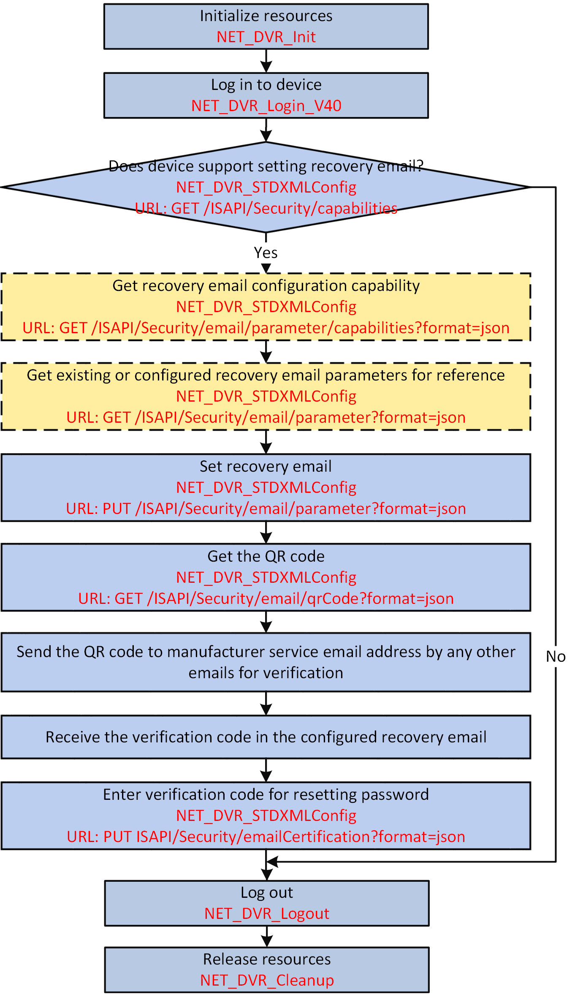

A recovery email is added or configured for resetting the password as
required. The admin user can set a recovery email after activating the device, and then
receive the verification code from the manufacturer via the recovery email to reset the
device password.

Figure 1 Programming Flow of Resetting Password by Setting Recovery Email
Note:
You can reset password by other methods, such as answering security question,
importing GUID files, and so on. But all methods should be supported by
device, so you should call NET_DVR_STDXMLConfig to pass
through the request URL: GET
/ISAPI/Security/extern/capabilities for getting the
other security capability (XML_externSecurityCap) before choosing method to
reset password.
-
Call NET_DVR_STDXMLConfig to pass through
the request URL: GET
/ISAPI/Security/extern/capabilities for checking if the
device supports setting recovery email.
The security capability is returned in the message XML_SecurityCap by the output parameter pointer
(lpOutputParam).
If the node <isSupportSecurityEmail> exits in the
returned message and its value is "true", it indicates that setting recovery
email is supported by the device, and you can continue to perform the
following steps; otherwise, end this task.
- Optional:
Call NET_DVR_STDXMLConfig to pass through
the request URL: GET
/ISAPI/Security/email/parameter/capabilities?format=json for getting
the recovery email configuration capability.
The recovery email configuration capability is returned in the message JSON_SecurityEmailCap by the output parameter
pointer (lpOutputParam).
- Optional:
Call NET_DVR_STDXMLConfig to pass through
the request URL: GET
/ISAPI/Security/email/parameter?format=json for getting
the existing or configured recovery email parameters for reference.
-
Call NET_DVR_STDXMLConfig to pass through
the request URL: PUT
/ISAPI/Security/email/parameter?format=json and set the
input parameter pointer ( lpInputParam) to the message
JSON_SecurityEmail for setting recovery email
parameters.
-
Call NET_DVR_STDXMLConfig to pass through
the request URL: GET
/ISAPI/Security/email/qrCode?format=json for getting
the QR code of the configured recovery email.
-
Send the QR code to manufacturer service email address by any other emails for
verification.
-
Receive the verification code in the configured recovery email.
-
Call NET_DVR_STDXMLConfig to pass through
the request URL: PUT
/ISAPI/Security/emailCertification?format=json and set
the input parameter pointer ( lpInputParam) to the message
JSON_EmailCertification (with the received verification
code entered) for resetting the device password.
Call NET_DVR_Logout and NET_DVR_Cleanup to log out off the
device and release the resources.